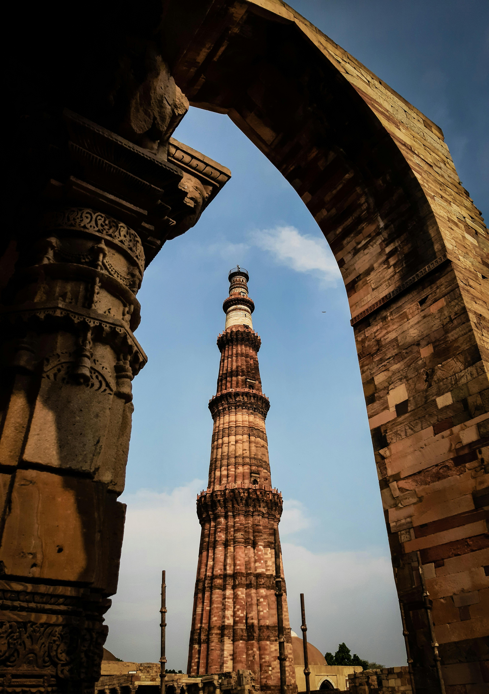

Qutub Minar
The Qutub Minar, located in Delhi, India, is a towering symbol of early Indo-Islamic architecture. It stands as a testament to the rich history and cultural heritage of India.
Explore the Qutub Minar for historical insights.
Taj Mahal

The Taj Mahal, located in Agra, India, is an iconic symbol of love and architectural magnificence. It was built by Emperor Shah Jahan in memory of his beloved wife, Mumtaz Mahal, who died during childbirth. Construction of the Taj Mahal began in 1632 and took over 20 years to complete, involving thousands of artisans and craftsmen. It is renowned for its stunning white marble architecture, intricate carvings, and beautiful gardens. The Taj Mahal is considered one of the most beautiful buildings in the world and is a UNESCO World Heritage Site.
Visit the Taj Mahal to learn more.